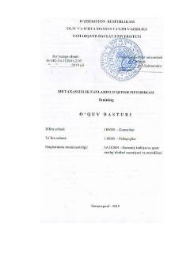

MFJismoniy tarbiya magistrlarini o'qitish metodikasiga bag'ishlangan o'quv qo'llanma.
Ushbu o'quv qo'llanma magistratura bosqichida jismoniy madaniyat yo'nalishi magistrlarini tayyorlashga mo'ljallangan bo'lib, mutaxassislik fanlarini o'qitishning nazariyasi, metodlari va shakllari yoritiladi. Fanning maqsadi — bo'lajak jismoniy tarbiya o'qituvchilarida kasbiy bilim, ko'nikma va malakalarni shakllantirish. Shuningdek, zamonaviy pedagogik texnologiyalar, interfaol usullar va uzluksiz ta'lim tizimining xususiyatlari ham ko'rib chiqiladi.